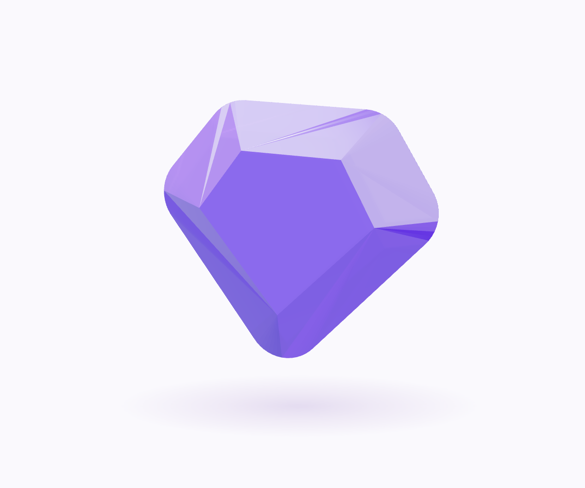

SITE FOR DEVELOPERS
개발자들의
첫 번째 북마크.
AI 도구부터 공식 문서, 커뮤니티까지.
개발에 활용할 수 있는 리소스를 모았습니다.
README가 원본입니다. 목록은 자동으로 생성됩니다.
◇SFD

SFD / YOUR FIRST BOOKMARKEXPLORE THE DIRECTORY
전체 리소스
불러오는 중…
일치하는 리소스가 없습니다.
다른 검색어를 입력하거나 검색·필터를 초기화해보세요.
목록을 불러오지 못했습니다. 페이지를 새로고침하거나 README 원문을 확인해주세요.
라벨과 목록을 읽는 방법
라벨은 README 원문 기준이며, 웹 목록 생성 시 별도로 재검증하지 않습니다. O: 오픈소스 · F: 무료 기능/플랜 · $: 유료/부분유료 · KR/EN: 페이지 언어.
라벨 미기재는 미검증이며 무료를 뜻하지 않습니다. 가격·사용 한도·라이선스는 공식 페이지에서 확인하세요. 외부 모델/API·호스팅 비용은 별도일 수 있습니다. 추천의 재노출은 별도 항목으로 유지합니다.